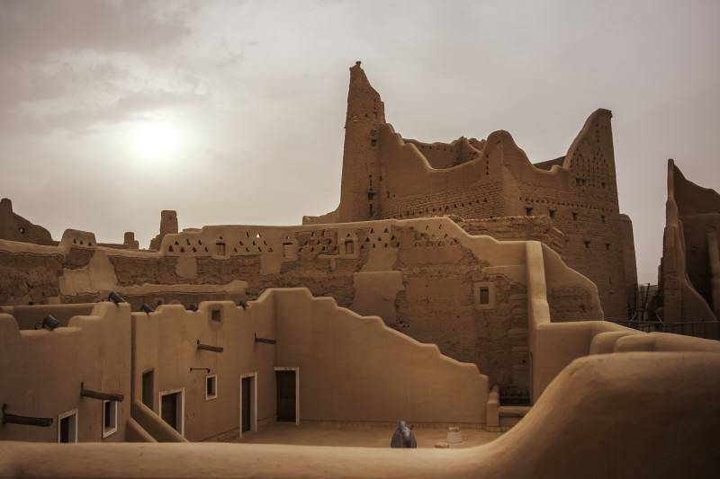
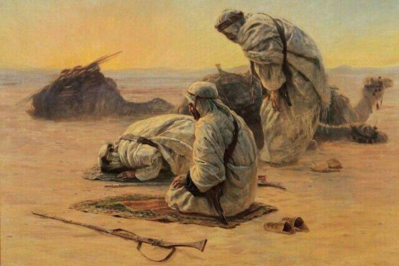
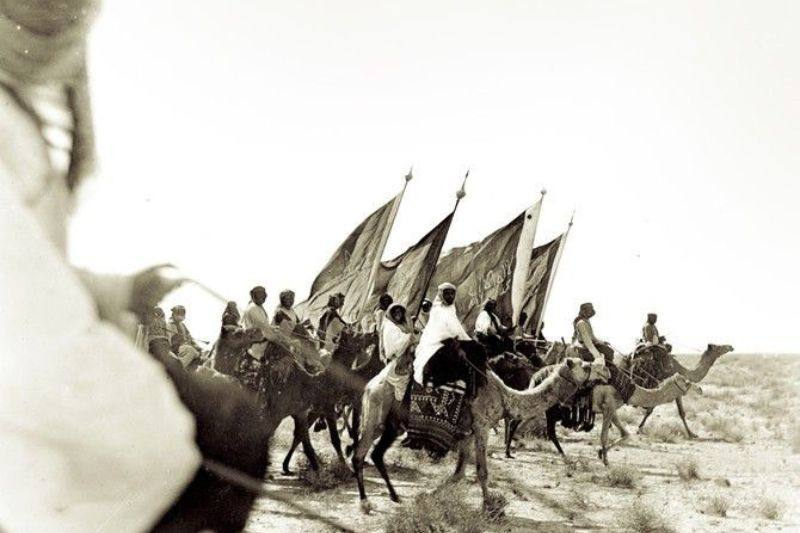

في العام 610م، بدأ النبي محمد ﷺ دعوته للإسلام في مكة، وسرعان ما انتشر الدين الجديد في أرجاء الجزيرة العربية، حيث أسس الرسول أول دولة إسلامية قائمة على العدل والشريعة الإسلامية. بحلول عام 632م، كان النبي قد نجح في توحيد معظم القبائل العربية تحت راية الإسلام، مما أدى إلى إنهاء الحروب القبلية وتوحيد الجزيرة العربية سياسيًا ودينيًا لأول مر في التاريخ.
في عام 1727م، تولى الإمام محمد بن سعود حكم الدرعية، وبدأ بوضع أسس دولة قوية في نجد. كان هدفه توحيد القبائل المتفرقة تحت حكم مركزي مستقر، فقام بتعزيز الأمن في المنطقة ونظم الشؤون الداخلية. مع مرور الوقت، بدأ نفوذ الدولة السعودية الأولى يتوسع تدريجيًا، مما جعلها مركزًا سياسيًا مهمًا في الجزيرة العربية، خاصة بعد تحالفها مع الشيخ محمد بن عبدالوهاب.
التقى الإمام محمد بن سعود بالشيخ محمد بن عبدالوهاب في الدرعية عام 1744م، حيث اتفقا على إقامة دولة تقوم على مبادئ الإسلام الصحيحة. كان هذا الاتفاق نقطة تحول كبرى في تاريخ الجزيرة العربية، حيث أعطى الشرعية الدينية للحكم السياسي للإمام محمد بن سعود، وساهم في نشر الإصلاح الديني في مناطق واسعة من نجد وخارجها. هذا التحالف أدى إلى انطلاق الدولة السعودية الأولى بقوة، وبدأت مرحلة جديدة من التوسع والسيطرة.
خلال هذه الفترة، توسعت الدولة السعودية الأولى بشكل غير مسبوق، حيث سيطرت على مناطق واسعة مثل الأحساء، الحجاز، عسير، وأجزاء من الشام والعراق. لكن هذا التوسع أثار قلق الدولة العثمانية، التي رأت في الدولة السعودية تهديدًا لنفوذها في المنطقة. أرسلت الدولة العثمانية حملة عسكرية بقيادة إبراهيم باشا، الذي تمكن بعد معارك طويلة من تدمير الدرعية في عام 1818م، مما أدى إلى سقوط الدولة السعودية الأولى بعد حوالي 90 عامًا من قيامها.
بعد سقوط الدرعية، حاول العديد من أفراد آل سعود إعادة الحكم السعودي. وفي عام 1824م، نجح الإمام تركي بن عبدالله في استعادة السيطرة على الرياض، وأسس الدولة السعودية الثانية. قام الإمام تركي بإعادة تنظيم الدولة، واهتم بتعزيز الأمن والاستقرار في المنطقة، لكنه واجه تحديات كثيرة، خاصة من القوى المنافسة مثل آل رشيد في حائل.
بعد عقود من الحروب الداخلية والصراعات على الحكم، تمكن آل رشيد من السيطرة على الرياض عام 1891م. اضطر الإمام عبدالرحمن بن فيصل، آخر حكام الدولة السعودية الثانية، إلى مغادرة البلاد مع عائلته، ومن بينهم ابنه عبدالعزيز بن عبدالرحمن آل سعود، الذي كان في ذلك الوقت لا يزال شابًا. توجهت العائلة إلى الكويت، حيث بدأ عبدالعزيز في التخطيط لاستعادة حكم آل سعود يومًا ما.
في 15 يناير 1902م، قاد الملك عبدالعزيز بن عبدالرحمن آل سعود مجموعة صغيرة من الرجال في هجوم جريء على قصر المصمك في الرياض. نجح عبدالعزيز في السيطرة على القصر وقتل عجلان بن محمد، الحاكم الموالي لآل رشيد، وأعاد الرياض إلى حكم آل سعود. كانت هذه الخطوة الأولى نحو استعادة الدولة السعودية وتوحيد الجزيرة العربية من جديد.

بعد استعادة الرياض، خاض الملك عبدالعزيز معارك طويلة مع آل رشيد، الذين كانوا يحكمون أجزاء كبيرة من نجد. استمرت هذه الصراعات لعشر سنوات تقريبًا، حتى تمكن عبدالعزيز من تحقيق النصرالحاسم في عام 1912م، مما جعله الحاكم الفعلي لنجد، ووضعه في موقع قوي لتوسيع دولته أكثر.

في عام 1913م، قاد الملك عبدالعزيز حملة عسكرية ناجحة لطرد القوات العثمانية من الأحساء. شكل هذا الحدث نقلة نوعية في تاريخ الدولة، حيث منح عبدالعزيز موارد اقتصادية جديدة، كما جعله أكثر قوة على الساحة الإقليمية.
بعد صراع طويل مع الشريف حسين، نجح الملك عبدالعزيز في دخول مكة المكرمة والمدينة المنورة عام 1925م. ضم الحجاز أعطى شرعية دينية قوية لحكمه، حيث أصبح الحاكم على أقدس مدينتين في الإسلام، مما عزز مكانته في العالم الإسلامي.
في 23 سبتمبر 1932م، وبعد أكثر من 30 عامًا من الحروب والتوحيد، أعلن الملك عبدالعزيز قيام المملكة العربية السعودية، وجعل الرياض عاصمة لها. كانت هذه اللحظة تتويجًا لجهود طويلة في توحيد القبائل والمناطق المختلفة تحت راية واحدة.